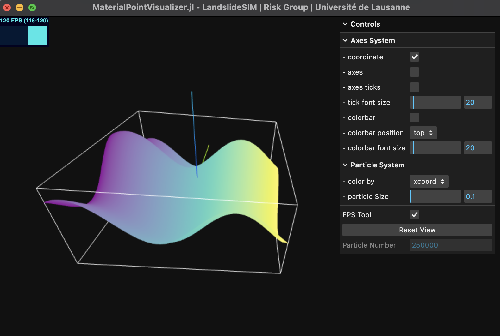

GUI
Sometimes we already have data in Julia and just want to see the results without exporting it to other software for visualization, which is too troublesome...😢
We implemented a high-performance rapid visualization solution using Three.js, allowing you to quickly and smoothly view millions of particles (at least on my laptop). However, sometimes we connect to a remote headless server for calculations via SSH, and at this point, we also support quickly viewing the results through your local browser.
If your data is large on a remote server, such as over a million, then you need to wait for the data to be transferred locally. We use a binary file for saving. During this process, the web page content is blank. Just give me the translation result directly.
Example
Assuming we visualize locally (GUI) and use the particles' $x$ and $z$ coordinates as two attributes of the vertices for coloring:
using MaterialPointGenerator # generate particles
using MaterialPointVisualizer
n = 500
xy = meshbuilder(range(1, 10, length=n), range(1, 10, length=n)) # x, y coordinates
z = @. sin(xy[:, 1]) + cos(xy[:, 2]) # z coordinates
coords = hcat(xy, z) # vertices
attr = (xcoord=coords[:, 1], zcoord=coords[:, 3]) # vertices' attibutes
vispts(coords, colormap="viridis", attrs=attr, gui=true)If everything is normal, you should now see a separate window displaying the particles. If gui=false, then the Julia REPL should print an address for you to check in your browser.

I personally believe that for visualizations with more than 3,600,000 particles, the human eye may not be able to discern differences, so this is the default threshold, but you can change it freely.
- On the touchpad, a two-finger press and move is panning.
- If the input method is not in English when the GUI is opened, the Julia REPL may print some information; please ignore it.
- If you use
gui=trueon a headless server, it will throw an error. In other words, the remote server must use a website approach. - Although the Julia VSCode extension has a plot panel, I don't want to use it. Opening a browser should be sufficient. I guess everyone has at least one modern browser on their computer. 😝
Many args are not required, please check:
MaterialPointVisualizer.vispts — Methodvispts(coord::Matrix; colormap="viridis", attrs=NamedTuple(), gui=false, sample_n=3600000)Description:
Visualize the particles in a local GUI window or website.
coordis a matrix of the particle coordniates, it can be 2/3 colomns for 2/3D
visualization.
colormapis the color theme will be used in the visualization. By default, it is
set to "viridis". [optional]
attrsis a NamedTuple of the attributes of the particles, the keys are the attribute
names and the values are the attribute values. [optional]
guiis a boolean value to determine whether to open a local GUI window or a website. By
default, it is set to false, i.e., website mode. [optional]
sample_nis the number of particles to be sampled for visualization. By default, it
is set to 3,600,000. [optional]